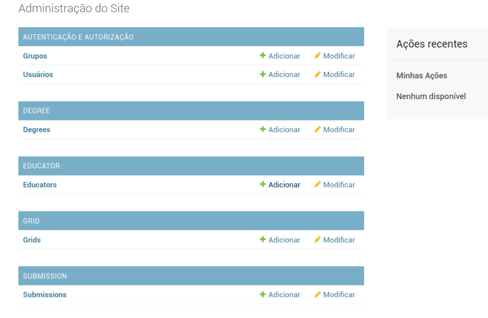
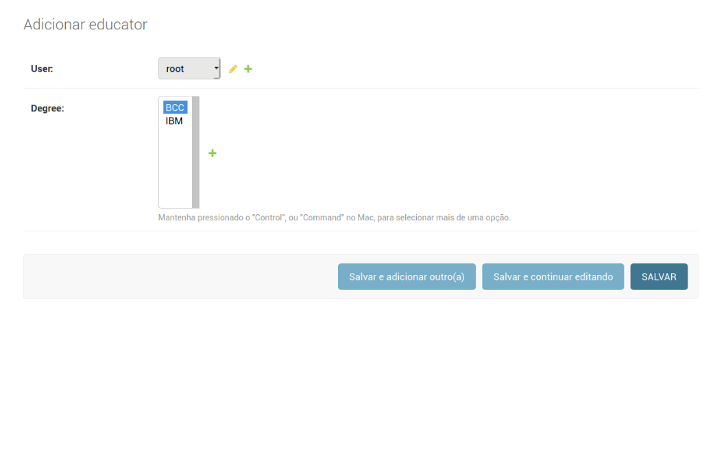

O A.D.E.G.A (Ánalise de Dados Estatísticos da Grade Acadêmica) é um sistema web feito, a priori, para auxiliar os coordenadores de cursos a administrarem a graduação. O sistema oferece análises como o IRA médio do curso, listagem de possívei formandos, a taxa de reprovação das disciplinas ou a quantidade de evasão por semestre. Essas análises buscam auxiliar os coordenadores a identificar problemas na grade do curso e monitorar melhor o desempenho de alunos.
Para instalar o projeto devemos clonar o seu repositório no GitHub ou GitLab. Para isso execute este comando em seu terminal:
O projeto foi desenvolvido usando Docker, um software contêiner que facilita a virtualização, desenvolvimento e manutenção de aplicações. Siga com os comandos a seguir para executar o ADEGA com o docker e instalar todas as dependências.
(Docker >= 1.13.1 e Docker-compose >=1.21.2)
Pronto. A partir deste momento o projeto esta rodando e pode ser acessado em localhost:8000
Para acessar a plataforma é necessário um Cadastro, caso seja o primeiro acesso é necessário criar esse usuário manualmente. Os passos a seguir mostram passo a passo como se cria um usuário na classe Educator(educador).
Em seu terminal prosiga com o comando
Com o super-usuário criado é permitido acessar a Administração do Django em localhost:8000/adega/admin. Nela gerencia-se grupos de usuários, cursos, educadores e submissões. A que nos interessa é a sessão "Educator".
Siga as imagens para cadastrar um usuário novo como educador.
Selecione a sessão EDUCATOR
Escolha o usuário e o curso que ela será responsável (caso não exista, adicione um curso na sessão DEGREE)
